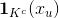
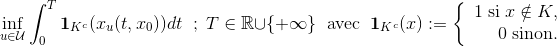

Florian Miralles
Etudiant en Mathématiques appliquées

Etudiant en Mathématiques appliquées
L'objectif du stage a été d'approcher numériquement les solutions du problème d'optimisation du temps de crise dans le cadre du système de Lotka-Volterra. Le problème du temps de crise consiste à minimiser le temps pris par les solutions d'un système dynamique contrôlé, à l'extérieur d'un certain ensemble K donné. Il s'agit d'un problème non classique car ici l'intégrande vaut , ce qui introduit une discontinuité par rapport à l'état x. Cet ensemble décrit des contraintes sur l'état du système. Le temps de crise est le résultat du problème d'optimisation suivant :
La plus grande partie de mon travail a consisté à résoudre numériquement le problème du temps de crise lié au système de Lotka-Volterra par Lagrangien augmenté. C'est une méthode différente des autres méthodes basées sur la régularisation.